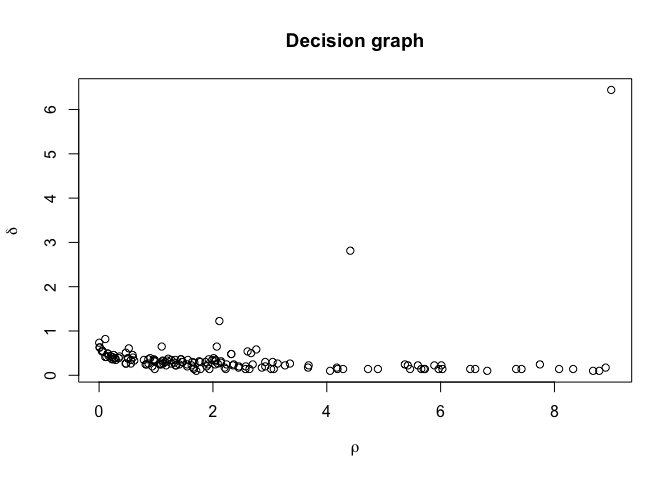
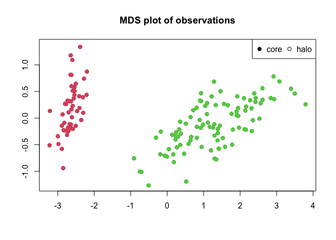

This package implement the clustering algorithm described by Alex Rodriguez and Alessandro Laio (2014). It provides the user with tools for generating the initial rho and delta values for each observation as well as using these to assign observations to clusters. This is done in two passes so the user is free to reassign observations to clusters using a new set of rho and delta thresholds, without needing to recalculate everything.
Plotting
Two types of plots are supported by this package, and both mimics the types of plots used in the publication for the algorithm. The standard plot function produces a decision plot, with optional colouring of cluster peaks if these are assigned. Furthermore plotMDS() performs a multidimensional scaling of the distance matrix and plots this as a scatterplot. If clusters are assigned observations are coloured according to their assignment.
Cluster detection
The two main functions for this package are densityClust() and findClusters(). The former takes a distance matrix and optionally a distance cutoff and calculates rho and delta for each observation. The latter takes the output of densityClust() and make cluster assignment for each observation based on a user defined rho and delta threshold. If the thresholds are not specified the user is able to supply them interactively by clicking on a decision plot.
Usage
library(densityClust)
irisDist <- dist(iris[,1:4])
irisClust <- densityClust(irisDist, gaussian=TRUE)## Distance cutoff calculated to 0.2767655
plot(irisClust) # Inspect clustering attributes to define thresholds
irisClust <- findClusters(irisClust, rho=2, delta=2)
plotMDS(irisClust)
split(iris[,5], irisClust$clusters)## $`1`
## [1] setosa setosa setosa setosa setosa setosa setosa setosa setosa setosa
## [11] setosa setosa setosa setosa setosa setosa setosa setosa setosa setosa
## [21] setosa setosa setosa setosa setosa setosa setosa setosa setosa setosa
## [31] setosa setosa setosa setosa setosa setosa setosa setosa setosa setosa
## [41] setosa setosa setosa setosa setosa setosa setosa setosa setosa setosa
## Levels: setosa versicolor virginica
##
## $`2`
## [1] versicolor versicolor versicolor versicolor versicolor versicolor
## [7] versicolor versicolor versicolor versicolor versicolor versicolor
## [13] versicolor versicolor versicolor versicolor versicolor versicolor
## [19] versicolor versicolor versicolor versicolor versicolor versicolor
## [25] versicolor versicolor versicolor versicolor versicolor versicolor
## [31] versicolor versicolor versicolor versicolor versicolor versicolor
## [37] versicolor versicolor versicolor versicolor versicolor versicolor
## [43] versicolor versicolor versicolor versicolor versicolor versicolor
## [49] versicolor versicolor virginica virginica virginica virginica
## [55] virginica virginica virginica virginica virginica virginica
## [61] virginica virginica virginica virginica virginica virginica
## [67] virginica virginica virginica virginica virginica virginica
## [73] virginica virginica virginica virginica virginica virginica
## [79] virginica virginica virginica virginica virginica virginica
## [85] virginica virginica virginica virginica virginica virginica
## [91] virginica virginica virginica virginica virginica virginica
## [97] virginica virginica virginica virginica
## Levels: setosa versicolor virginicaNote that while the iris dataset contains information on three different species of iris, only two clusters are detected by the algorithm. This is because two of the species (versicolor and virginica) are not clearly seperated by their data.
Refences
Rodriguez, A., & Laio, A. (2014). Clustering by fast search and find of density peaks. Science, 344(6191), 1492-1496. https://doi.org/10.1126/science.1242072